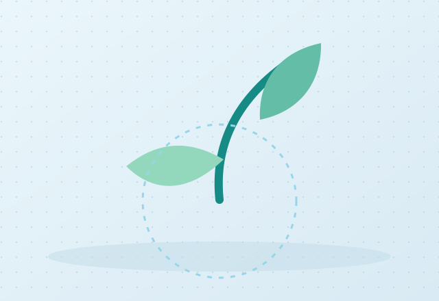

Environmental policy takes shape
Intel formalizes a company-wide commitment to environmental responsibility.
Intel’s environmental policy established a foundation for managing impacts across its operations. The company has continued to update its policies as its business and environmental priorities evolve.
Intel Environment & Energy Policy